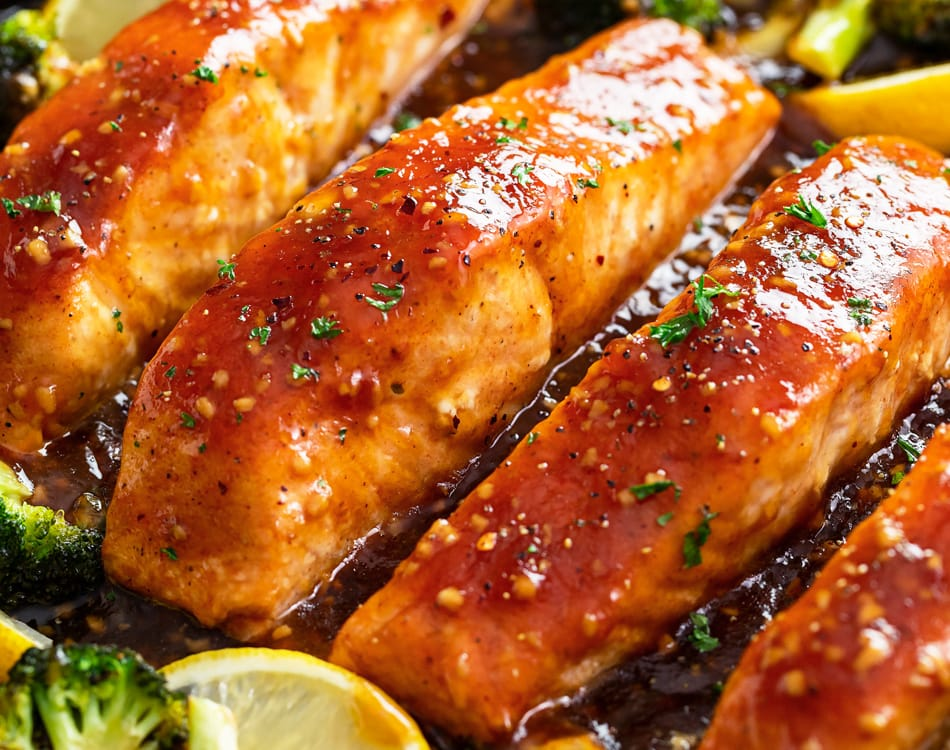

honey glazed salmon

A light flakey salmon coated in a lemon-soysauce-honey glaze
Slow cooked Salmon filet basted on low heat with a sauce made of honey, soysauce, lemon, and honey. This recipe is easy to make, inexpensive, and gives the allure of a fancy dish.
Ingredients needed:
- 4 6-oz Salmon filets
- 1/3 cup of honey
- 1/4 cup soy sauce
- 3 tbsp extra-virgin olive oil
- 2 tbsp lemon juice
- 1 lemon, sliced thinly into rounds
- salt and pepper to taste
Steps:
- Grab your soy sauce, honey, and lemon juice and throw them into a bowl, whisking them aggressivly until their consistency is like water.
- Take your frying pan, slap that sucker down, crank your stove top to medium heat, and get that pan nice and hot.
- Next you're going to want to add 2 of those 3 tablespoons of oil to that pan, if the oil smokes the pan is too hot. Once you've determinded if the pan ISN'T too hot, add your salmon to the pan SKIN SIDE UP. Cook until golden brown, about 6 minutes each side.
- Add the lemon slices and honey-lemon-soysauce mixture you whipped up earlier to the pan. Cook until the sauce has been reducd to about a third of its original contents. Reduce heat and baste salmon in the sauce.
- Garnish the salmon with the lemon slices you cut earlier (you didn't forget did you?)